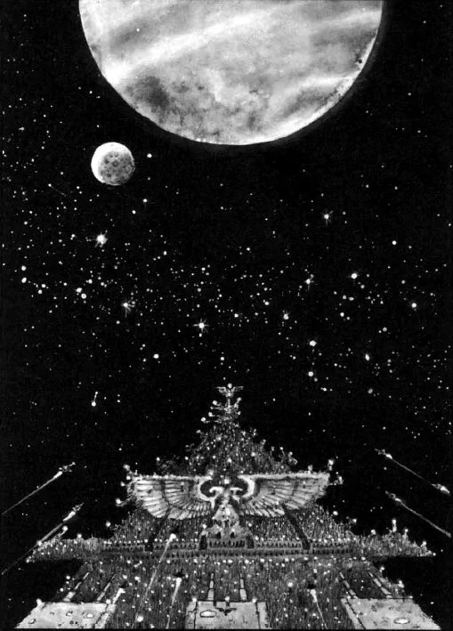
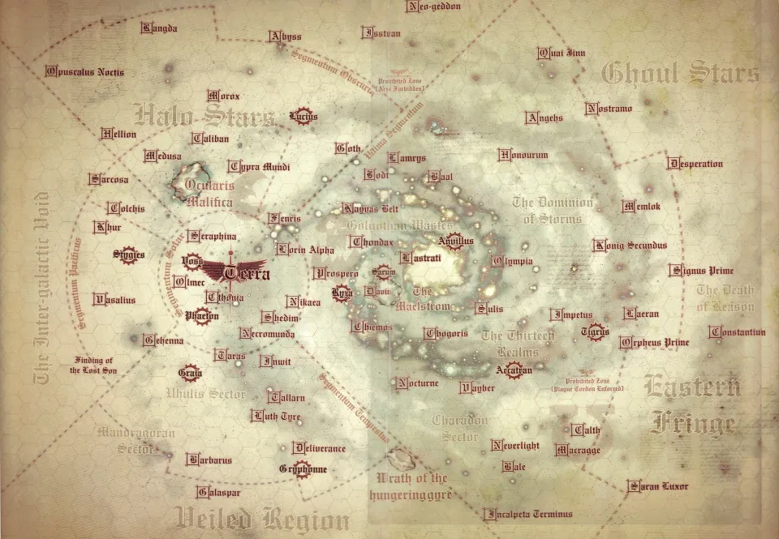

01ภาพรวม
หลังรวม Terra สำเร็จใน Unification Wars และได้ดาวอังคารเป็นพันธมิตร ราวปี 798.M30 จักรพรรดิเริ่มขั้นต่อไปของแผน — ออกเดินทางรวบรวมดาวมนุษย์ทุกดวงที่พลัดหลงในยุค Age of Strife กลับมาเป็นอาณาจักรเดียว การเดินทางนี้ถูกเรียกว่า Great Crusade (เกรท ครูเสด)
ช่วงนี้มักถูกเรียกว่ายุคทองของจักรวรรดิ จักรพรรดิยังมีชีวิตและนำทัพด้วยตัวเอง มนุษย์มีความหวัง วิทยาศาสตร์รุ่งเรือง และไม่มีใครบูชาจักรพรรดิเป็นพระเจ้า — ตรงข้ามกับยุค 40K โดยสิ้นเชิง

จักรพรรดิเกลียดสงคราม แต่เชื่อว่ามนุษย์ต้องรวมเป็นหนึ่งโดยเร็วก่อนที่ Chaos และเผ่าต่างดาวจะทำลายทีละดาว ดาวที่ยอมรับจะเข้าร่วมอย่างสันติ เรียกว่า Compliance (การยอมรับ) ส่วนดาวที่ปฏิเสธจะถูกพิชิต
02Great Crusade ทำงานอย่างไร
Expedition Fleet (กองเรือสำรวจ)
กองเรือขนาดหลายร้อยถึงหลายพันลำ แต่ละกองมี Space Marine, ทหาร Imperial Army และช่าง Mechanicum ช่วงท้ายมีกองเรือหลัก 4,287 กอง และหน่วยย่อยกว่า 60,000 หน่วย ดาวที่ถูกค้นพบจะได้ชื่อเป็นตัวเลข เช่น "Sixty-Three Nineteen" คือดาวดวงที่ 19 ที่กองเรือที่ 63 พบ
Rogue Trader รุ่นแรก
อดีตผู้ปกครองที่แพ้สงคราม ได้รับทางเลือกระหว่างตายหรือรับ "Warrant of Trade" แล้วออกไปสำรวจล่วงหน้ากองเรือหลัก ห้ามกลับ Terra หลายคนหายไปในความมืดโดยไม่มีใครรู้
Remembrancer (ผู้บันทึก)
ศิลปิน กวี นักประวัติศาสตร์ ช่างภาพ รวมกว่า 4.3 ล้านคน ถูกส่งไปกับกองเรือในช่วงท้ายเพื่อบันทึกยุคทอง Space Marine หลายคนไม่ชอบที่มีพลเรือนติดตาม — นิยาย Horus Rising เล่าผ่านมุมของ Remembrancer หลายคน
Iterator (นักเผยแพร่)
นักปรัชญาและนักโฆษณาชวนเชื่อที่ไปกับทุกกองเรือ ทำหน้าที่อธิบาย Imperial Truth ให้ชาวดาวใหม่เชื่อว่าการเข้าร่วมจักรวรรดิคือสิ่งดี
นอกจากนี้ยังมีด้านมืดที่ไม่ค่อยถูกพูดถึง — เครือข่ายสายลับของ Malcador the Sigillite, วิหารนักฆ่า (ต้นกำเนิด Officio Assassinorum) และอาวุธต้องห้ามที่ใช้เฉพาะคำสั่งพิเศษ ทั้งหมดนี้ทำให้ "สันติภาพแห่งจักรวรรดิ" (Pax Imperialis) ต้องจ่ายด้วยเลือด
03การค้นพบ Primarch ทีละคน
Primarch ทั้ง 20 คนถูกพลัง Chaos พัดกระจายไปทั่วกาแล็กซีตั้งแต่ยังเป็นทารก การตามหาจึงเป็นส่วนสำคัญของ Great Crusade เมื่อพบแล้ว Primarch จะได้ปกครอง Legion ที่สร้างจากพันธุกรรมของตัวเอง ทำให้การผลิต Space Marine เร็วขึ้นมาก (ช่วงพีคสร้างทหารพร้อมรบได้ในราวหนึ่งปี)
| ปี | Primarch | ดาวที่เติบโต | Legion |
|---|---|---|---|
| 801.M30 | Horus | Cthonia | XVI Luna Wolves |
| 819.M30 | Leman Russ | Fenris | VI Space Wolves |
| 821.M30 | ข้อมูลถูกลบ — เชื่อกันว่าเป็นหนึ่งใน Primarch ที่หายไป | ||
| 824.M30 | Ferrus Manus | Medusa | X Iron Hands |
| 830.M30 | Fulgrim | Chemos | III Emperor's Children |
| 832.M30 | Vulkan | Nocturne | XVIII Salamanders |
| 835.M30 | Rogal Dorn | Inwit | VII Imperial Fists |
| 837.M30 | Roboute Guilliman | Macragge | XIII Ultramarines |
| 840.M30 | Magnus the Red | Prospero | XV Thousand Sons |
| 843.M30 | Sanguinius | Baal | IX Blood Angels |
| 846.M30 | Lion El'Jonson | Caliban | I Dark Angels |
| 849.M30 | Perturabo | Olympia | IV Iron Warriors |
| 854.M30 | Mortarion | Barbarus | XIV Death Guard |
| 857.M30 | Lorgar | Colchis | XVII Word Bearers |
| 865.M30 | Jaghatai Khan | Chogoris | V White Scars |
| 896.M30 | Konrad Curze | Nostramo | VIII Night Lords |
| 899.M30 | Angron | Nuceria | XII World Eaters |
| 922.M30 | Corvus Corax | Lycaeus (Deliverance) | XIX Raven Guard |
| 927.M30 | ข้อมูลถูกลบ — อีกหนึ่ง Primarch ที่หายไป | ||
| 981.M30 | Alpharius Omegon | ไม่แน่ชัด (มีหลายฉบับ) | XX Alpha Legion |
ปีตามลำดับเหตุการณ์ที่รวบรวมในหนังสือชุด Horus Heresy — บันทึกของจักรวรรดิเองบอกว่าลำดับการค้นพบ "ไม่ชัดเจนทั้งหมด" สิ่งที่แน่นอนคือ Horus ถูกพบเป็นคนแรก และ Alpharius คนสุดท้าย
Horus ถูกพบก่อนพี่น้องคนอื่นหลายปี เขากับจักรพรรดิรบเคียงข้างกันจนสนิทเหมือนพ่อลูกจริง ๆ ความผูกพันนี้ทำให้เขาเหมาะกับตำแหน่ง Warmaster ในภายหลัง — และทำให้การทรยศของเขาเจ็บปวดที่สุด
04ศึกและเหตุการณ์สำคัญระหว่างทาง
ปลดปล่อยระบบสุริยะ (Sedna)
Legion แปดกองร่วมกันทำลาย Sedna ดาวเทียมเทียมของต่างดาวที่ขอบระบบสุริยะ เพื่อให้บ้านเกิดปลอดภัยก่อนออกไปไกลกว่านั้น
Rangdan Xenocides
สงครามกับเผ่าต่างดาว Rangda ที่ขอบกาแล็กซี (Halo Stars) โหดร้ายที่สุดใน Great Crusade Dark Angels เป็นกำลังหลัก การกวาดล้างครั้งที่สามจบราวปี 890.M30 ด้วยการสูญเสีย Space Marine ราว 50,000 นาย
Interex: โอกาสที่เสียไป
Luna Wolves ของ Horus พบ Interex อารยธรรมมนุษย์ที่อยู่ร่วมกับต่างดาวอย่างสันติ การเจรจาไปได้ดี จนกระทั่ง Erebus แห่ง Word Bearers แอบขโมยมีด Anathame จากคลังของ Interex ความเข้าใจผิดที่ตามมากลายเป็นสงคราม และ Interex ถูกทำลาย — มีดเล่มนั้นเองที่ภายหลังทำร้าย Horus บน Davin
การเผาเมือง Monarchia
จักรพรรดิสั่ง Ultramarines ทำลายเมือง Monarchia บนดาว Khur ที่ Word Bearers สร้างเป็นวิหารบูชาพระองค์ แล้วให้ Word Bearers ทั้ง Legion คุกเข่าบนเถ้าถ่าน ความอับอายครั้งนี้ทำให้ Lorgar หันไปหา "เทพที่แท้จริง" — Chaos
Cadia ถูกบันทึกในแผนที่
ระหว่างการเดินทางแสวงบุญของ Lorgar ดาว Cadia ถูกบันทึกเข้าสู่ Carta Imperialis — ดาวที่หมื่นปีต่อมาจะเป็นป้อมปราการหน้า Eye of Terror
Night Lords ทำลายดาวบ้านเกิด
หลัง Konrad Curze ทำร้าย Rogal Dorn เขาสั่ง Night Lords ยิงทำลาย Nostramo ดาวบ้านเกิดของตัวเองจนแตกเป็นเสี่ยง
Raven Guard พิชิต Isstvan
ระบบดาว Isstvan เข้าร่วมจักรวรรดิ Vardus Praal ได้เป็นผู้ว่าการ Isstvan III — ดาวที่สิบปีต่อมาจะเป็นจุดเริ่มของ Heresy
Ullanor และการแต่งตั้ง Warmaster
ดูรายละเอียดด้านล่าง
สภา Nikaea
ตัดสินเรื่องการใช้พลังจิต ดูรายละเอียดด้านล่าง
Luna Wolves → Sons of Horus
Legion ของ Horus เปลี่ยนชื่อเพื่อให้เกียรติ Primarch ของตน
05Ullanor: จุดสูงสุดของ Great Crusade
อาณาจักร Ork ของ Overlord Urrlak Urg ที่ Ullanor คือกองกำลัง Ork ที่ใหญ่ที่สุดที่มนุษย์เคยเจอจนถึงเวลานั้น จักรวรรดิส่งกำลังมหาศาล:
Horus ใช้ยุทธวิธี "หัวหอก" (Speartip) — ให้ White Scars และ Ultramarines บุกดาวรอบนอกเป็นเหยื่อล่อ เมื่อเรือ Ork ออกไปป้องกัน กองหลักของ Luna Wolves ก็พุ่งตรงไปที่ป้อมของ Urrlak บน Ullanor Prime Horus เทเลพอร์ตลงที่ฐานหอคอยพร้อมหน่วย Terminator ของ 1st Company แล้วบุกขึ้นไปถึงยอดพร้อมทีม Justaerin ของกัปตัน Ezekyle Abaddon เขาดวลกับ Urrlak และโยนร่างของมันลงจากยอดหอคอย
เมื่อผู้นำตาย อาณาจักร Ork ก็แตกเป็นเสี่ยงเพราะหัวหน้าย่อยแย่งอำนาจกันเอง จักรวรรดิกวาดล้างที่เหลือได้ภายในหนึ่งปี

พิธีฉลองชัย (Triumph of Ullanor)
จักรพรรดิจัดพิธีฉลองยิ่งใหญ่บน Ullanor มี Space Marine จาก 11 Legion และ Titan เดินสวนสนาม ในพิธีนี้พระองค์ประกาศสองเรื่องที่เปลี่ยนประวัติศาสตร์:
- Horus ได้เป็น Warmaster — ผู้บัญชาการสูงสุดของ Great Crusade มีอำนาจเหนือ Primarch ทุกคน
- จักรพรรดิจะกลับ Terra เพื่อทำ "งานสำคัญ" ที่ไม่บอกใคร (ภายหลังรู้ว่าคือการสร้าง Webway ของมนุษย์) และตั้ง Council of Terra สภาพลเรือนให้ปกครองแทน
เนื้อเรื่องล่าสุดเปิดเผยว่าหลัง War of the Beast ในอีกพันปีต่อมา Adeptus Mechanicus แอบเคลื่อนย้ายดาว Ullanor ทั้งดวงไปยังระบบดาวใหม่ และดาวดวงนั้นภายหลังถูกตั้งรกรากในชื่อ Armageddon — สมรภูมิของ สงคราม Armageddon ทั้งหมด
06สภา Nikaea: ห้ามใช้พลังจิต
ในปี 001.M31 จักรพรรดิเรียกประชุมที่ดาว Nikaea เพื่อตัดสินว่า Legion ควรใช้พลังจิตหรือไม่ ฝ่ายหนึ่งนำโดย Magnus the Red แห่ง Thousand Sons ที่ศึกษาเวทมนตร์อย่างลึกซึ้ง อีกฝ่ายคือ Primarch ที่หวาดระแวงพลังนี้ เช่น Leman Russ และ Mortarion
จักรพรรดิตัดสินให้ยุบหน่วย Librarian ทุก Legion และห้ามใช้เวทมนตร์ (Edict of Nikaea) Magnus ยอมรับคำตัดสินแต่ไม่ได้หยุดการศึกษา — การตัดสินใจนี้นำไปสู่การเผา Prospero ในอีกไม่กี่ปีต่อมา
คำตัดสินเดียวกันยังสร้างตำแหน่งใหม่ใน Legion คือ Chaplain ผู้ดูแลอุดมการณ์และความบริสุทธิ์ของ Legion ส่วนข้อห้ามใช้ Librarian ถูกยกเลิกหลัง Heresy เมื่อจักรวรรดิตระหนักว่าต้องมี psyker ไว้สู้กับ Chaos
07รอยร้าวที่ไม่มีใครเห็น
ภายนอกทุกอย่างดูดี แต่ภายในมีปัญหาสะสม:
- ลูกที่ถูกทิ้ง — Primarch หลายคนรู้สึกว่าบิดาทอดทิ้ง Great Crusade ไว้กลางทางและไม่ยอมบอกเหตุผล
- Warmaster ที่ไม่ใช่ทุกคนยอมรับ — Angron, Konrad Curze และ Perturabo ไม่พอใจที่ Horus ได้ตำแหน่ง
- ข่าวลือว่า Legion จะถูกยุบ — Space Marine หลายคนเชื่อว่าเมื่อสงครามจบ พวกเขาจะถูกลดเป็นตำรวจ เหมือนชะตากรรมของ Thunder Warrior
- ข้าราชการแทนนักรบ — Horus ไม่พอใจที่จักรวรรดิที่ตนรบมาถูกส่งให้ข้าราชการพลเรือนที่ไม่เคยเสียเลือด
- Legion ที่โหดเกินไป — Night Lords และ World Eaters ใช้วิธีสังหารหมู่จนเป็นที่หวาดกลัว Thousand Sons หลงในเวทมนตร์ Word Bearers ยังแอบบูชา
- ความภักดีที่เปลี่ยนทิศ — ทหารจำนวนมากภักดีต่อ Primarch ของตนมากกว่าจักรพรรดิที่ไม่เคยพบหน้า
Chaos ใช้รอยร้าวเหล่านี้ทั้งหมดในการล่อลวง Horus ผ่าน Lorgar และ Erebus จนเกิด Horus Heresy ที่ยุติ Great Crusade ไปตลอดกาล

08มรดกของ Great Crusade ในยุค 40K
- ดาวส่วนใหญ่ของจักรวรรดิในยุค 40K ถูกรวมเข้ามาในช่วงนี้
- จักรวรรดิไม่เคยกลับไปถึงจุดสูงสุดของยุคนี้ได้อีกเลย จนกระทั่ง Guilliman ฟื้นคืนชีพและเริ่ม Indomitus Crusade ซึ่งหลายคนมองว่าเป็น "Great Crusade ครั้งที่สอง"
- หลายสิ่งที่เคยเป็นของยุคทอง — Imperial Truth, Remembrancer, ความเป็นพี่น้องของ Legion — หายไปหมด เหลือแต่ศาสนาและความหวาดระแวง ดูความต่างทั้งหมดได้ที่ 30K vs 40K
09แหล่งข้อมูลและหมายเหตุ
เนื้อหาหน้านี้สรุปและแปลเป็นภาษาไทยจากบทความใน Warhammer 40k Wiki (Fandom) ซึ่งเรียบเรียงจากหนังสือ Codex, หนังสือชุด Horus Heresy ของ Forge World และนิยาย Black Library ด้านล่างนี้ (ตรวจสอบ ต.ค. 2026)
เนื้อเรื่อง Warhammer ถูกเขียนเพิ่มและแก้ไขมาตลอดหลายสิบปี ปี จำนวน และรายละเอียดบางจุดต่างกันไปตามหนังสือแต่ละเล่ม หน้านี้ใช้ฉบับที่แหล่งอ้างอิงส่วนใหญ่ยอมรับ และบอกไว้เมื่อมีหลายฉบับ